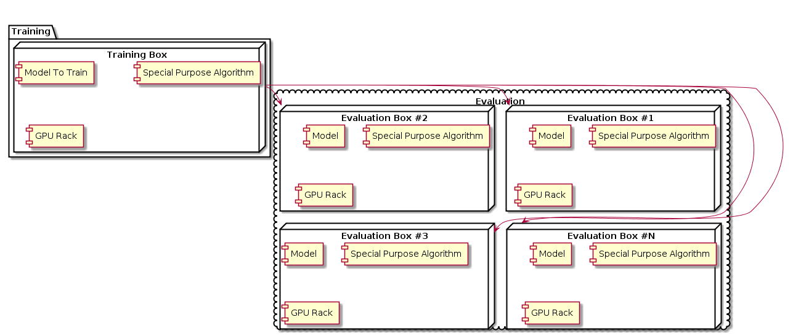
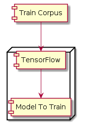
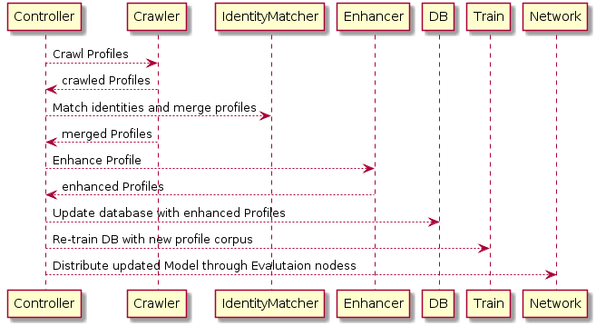
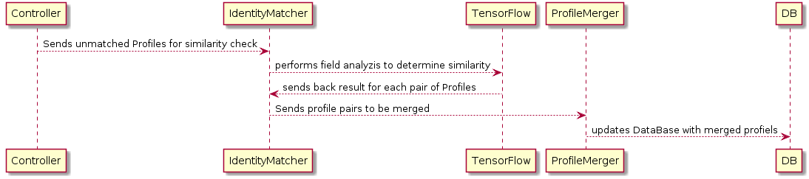
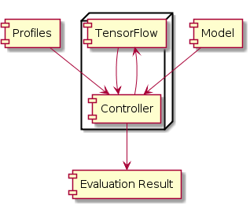

Table of Contents
1 Overall System Architecture
[PeopleMatchAI](https://github.com/softsky/people-match-ai) designed for fast determination of purchase capabilities using person profile.
Persons profile looks like this:
``` javascript { "id": { "$oid": "58ea248524dce09f41209710" }, "searchResult": [ { "otherEmails": [], "country": "United States", "source": "PeopleData", "lastUpdated": "2016-09-26T16:54:28Z", "id": "AVdOGcbPKMaPmPU7jEY", "state": "arizona", "probability": 1, "query": "MANUALREQUEST", "firstName": "John", "phone": "1-520-247-9050", "lastName": "Soukup", "stateAbbr": "AZ", "activity": null, "gender": "M", "city": "Tucson", "result": { "resultStatus": "OK", }, "term": "[1]", "mergedIdentities": [ { "source": "EX", "datetime": "2016-06-23T00:00:00Z", "lname": "Soukup", "class": "com.selerityfinancial.person.peopledata.dto.PeopleDataPerson", "email": "c.l.soukup@comcast.net", "fname": "John", "address": { "zip": "85749", "city": "Tucson", "streetAddress": "9352 E Vallarta Trl", "state": "AZ", "class": "com.selerityfinancial.person.peopledata.dto.PeopleDataAddress" }, "ip": [ "71.226.126.234" ], "phone": [ "1-520-247-9050" ], }, ]} ]}
```
1.1 Comments on Person Profile
- mergedDetails section contains the array of profile data collected from different places
- it may contain duplicated
- it may contain empty records
System support over 240 million profiles of US citizens.
1.2 Requirements
- Scalability: System architecture should be scalable and high performant (in terms of traininig and evaluation).
- High Performance: Since there will be multiple concurrent searches, and every search will take valuable amount of time, previous results should be cached. Cache will be wiped every time main database of people profiles is updated. We should monitor for most frequent searches and cache results only for them, while searches performed one or few times won't be cached to save memory and drive space
1.3 Other requirements:
- Model, once trained for some search purpose could be easily distributed between evaluation nodes I'd suggest using of dockerized containers (some for training and other for realtime evaluation).

Basically system architecture will look like that:
1.4 Training Box
Training Box performs following operations:
- New Profiles Crawling
- Itentity Match and Profile Merging
- Profile Enhancement
- Model training
- Model distribution across Evaluation Nodes
Training Box use Google Tensor Flow as AI
Old and new profiles form `Train Corpus` which is used by TensorFlow to create new `Models`
1.4.1 Deployment

Operaional Sequence is shown here:
1.4.2 Sequence

1.4.3 Identity Match
Crawling is performed over multiple resources. We need the way to properly match identities and merge their profiles. We might use email or phone as unique intentifier, since name won't always work. Since some resources might not return unique identifier we use AI comparing fiels.

Training box will be used most of the time to train all special purposes models using probably slightly modified Inception v3 alorigthm. Traning it from scratch is time consuming operation, however once all special purpose algos and models are trained it could be put down to save hosting cost and be running only once it's needed next time for next alorithm/model train. We will apparently have several purposes (so models and algos) depending on type of information consumers need to receive as the result of their searches.
1.5 Evaluation Box
Evaluation boxes will also be used all the time, they will serve large datasets searching for appropriate data according to consumer's search.

1.6 System Requirements
1.6.1 System hardware requirements
Here are system software requirements
- Training box: is distributed among 5 high performant 128Gb/10TB 6*12 Nvidia GPU machines
- Evaluation boxes: depends on number of concurrent searches and overall database size and complexity (in terms of fields in persons profiles)
1.6.2 System Software Requirements
Here are system software requirements
- OS: Amazon/Ubuntu Linux with recent 4.x kernel
- DB: MongoDB 3.3+
- AI: Google TenserFlow 1.x
- JVM: v1.8 or higher
1.6.3 How to run
From the project directory
``` shell docker-compose up docker exec -ti peoplematchaimaster1 bash spb run ```